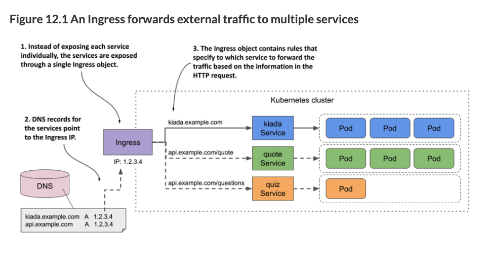
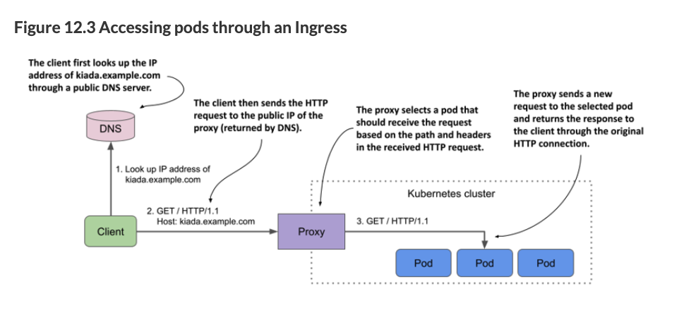

Ingress
Load Balancers vs Ingress
Load balancers are an easy way to expose apps, however Ingress is yet a different way that is more suited to HTTP requests. Here are some key differences:
Load Balancers can accept any kind of traffic (TCP, UDP, etc).
Cloud Kubernetes platforms like AKS and EKS are highly available multinode clusters. Deploying a Kubernetes LoadBalancer Service creates an actual load balancer in your cloud, which spans all the nodes in your cluster—the cloud load balancer sends incoming traffic to one of the nodes and then Kubernetes routes it to a Pod. You’ll get a different IP address for each LoadBalancer Service, and it will be a public address, accessible from the internet. What this means is that a LoadBalancer will spin up additional resources on your cloud provider. This doesn’t have to be the case with Ingress.
Cloud providers often charge based on “load balancing rules”, which roughly translates into how many load balancing external IP addresses are assigned. By using an ingress to combine several services into one, rather than each being exposed with it’s own IP, you can likely save money.
Docker Desktop’s local Kubernetes runs on a single machine and integrates with the network stack so LoadBalancer Services are available at the localhost address.
Ingress
For HTTPS, Ingress is the preferred way to expose your apps. You can have multiple services exposed on one host, whereas you cannot do that with a LoadBalancer. Ingress allows you to route requests based on the URL path. Ingress allows you to make changes to your services without changing the address to the end user (ex: if you want different url paths to now go to different services).
Ingress Controller
An Ingress controller is responsible for fulfilling the Ingress, usually with a load balancer.
The Ingress Resource doesn’t do anything by itself; you need an ingress controller which does the work of routing requests. The ingress controller often contains a reverse proxy like Nginx. When you set this up on cloud providers they may offer something a bitt different. Reverse proxies intercept requests and route them to where they need to go. These reverse proxies can also do other things like caching, load balancing, URL rewrites, and so on. There are lots of flavors of Ingress Resources (like Nginx, Traefik, etc).
If you’re using a managed cluster with one of the major cloud providers, an ingress controller is already in place. In Google Kubernetes Engine, the ingress controller is GLBC (GCE L7 Load Balancer), in AWS the Ingress functionality is provided by the AWS Load Balancer Controller, while Azure provides AGIC (Application Gateway Ingress Controller).
Reverse proxies intercept incoming web requests and can take different actions, such as rewriting the URL (changing the path), or routing different paths to different places. They can also provide security by blocking or ignoring certain requests and caching results. For these reasons, reverse proxies are a must-have for any production web application.
Reverse proxies are different than proxy servers. Proxy servers forward traffic from a requestor/client – “outbound traffic”. Reverse proxies intercept client requests and forward them to the server – “inbound traffic”. For example, proxy servers can hide the identity of the client. Reverse proxies can hide the identity of the server.


If you do not go with your cloud provider’s hosted K8s solution with a provided ingress controller, an experienced devops person will setup the ingress for you. Your DevOps team should deploy an Ingress controller for you. Your DevOps team should provide you with a template for the Ingress Resource, which may reference the Ingress controller. The important part is that you are comfortable enough to know what it is doing to modify an Ingress Resource template. You should not have to create an Ingress Resource from scratch.
In the below example, our Ingress controller is a load balancer that is also running Nginx. Below is the Service and the Deployment parts of the Ingress Controller to give you an idea that the controller itself is a LoadBalancer. The Deployment is a Deployment of the Nginx reverse proxy. The Service is a LoadBalancer Service that exposes the Nginx reverse proxy. You probably won’t and should not have to ever deal this.
---
apiVersion: v1
kind: Service
metadata:
name: ingress-nginx-controller
namespace: kiamol-ingress-nginx
spec:
type: LoadBalancer
ports:
- name: http
port: 80
targetPort: http
- name: https
port: 443
targetPort: https
selector:
app.kubernetes.io/name: ingress-nginx
app.kubernetes.io/instance: ingress-nginx
app.kubernetes.io/component: controller
---
apiVersion: apps/v1
kind: Deployment
metadata:
name: ingress-nginx-controller
namespace: kiamol-ingress-nginx
spec:
selector:
matchLabels:
app.kubernetes.io/name: ingress-nginx
app.kubernetes.io/instance: ingress-nginx
app.kubernetes.io/component: controller
template:
metadata:
labels:
app.kubernetes.io/name: ingress-nginx
app.kubernetes.io/instance: ingress-nginx
app.kubernetes.io/component: controller
spec:
containers:
- name: controller
image: k8s.gcr.io/ingress-nginx/controller:v1.1.1@sha256:0bc88eb15f9e7f84e8e56c14fa5735aaa488b840983f87bd79b1054190e660de
args:
- /nginx-ingress-controller
- --publish-service=kiamol-ingress-nginx/ingress-nginx-controller
- --election-id=ingress-controller-leader
- --ingress-class=nginx
- --configmap=kiamol-ingress-nginx/ingress-nginx-controller
securityContext:
runAsUser: 101
allowPrivilegeEscalation: true
env:
- name: POD_NAME
valueFrom:
fieldRef:
fieldPath: metadata.name
- name: POD_NAMESPACE
valueFrom:
fieldRef:
fieldPath: metadata.namespace
ports:
- name: http
containerPort: 80
protocol: TCP
- name: https
containerPort: 443
protocol: TCP
serviceAccountName: ingress-nginx
---Ingress Resource
This is an example of an Ingress Resource (the kind of file you may edit). Note that the path is one type of common configuration, and controller-specific options are specified via annotations (in the second example).
apiVersion: networking.k8s.io/v1
kind: Ingress
metadata:
name: timeserver-ingress
spec:
rules:
- http:
paths:
- path: /
pathType: Prefix
backend:
service:
name: timeserver-internal
port:
number: 80
- path: /robohash
pathType: Prefix
backend:
service:
name: robohash-internal
port:
number: 80Another example of an ingress:
apiVersion: networking.k8s.io/v1
kind: Ingress
metadata:
name: hello-kiamol
annotations: # this was added b/c of this https://github.com/sixeyed/kiamol/issues/32
kubernetes.io/ingress.class: "nginx"
labels:
kiamol: ch15
spec:
rules:
- http:
paths:
- path: /
pathType: Prefix
backend:
service:
name: hello-kiamol
port:
number: 80An ingress template should be provided to you by a DevOps engineer. You should not need to create one from scratch. This should vary from company to company. The annotations are special parameters passed along to the controller since the Ingress Resource spec is very minimal in the options it can take and because Ingress controllers have different capabilities. The annotations are controller-specific.
You can also have several hosts in the same ingress:
apiVersion: networking.k8s.io/v1
kind: Ingress
metadata:
name: timeserver-ingress
spec:
rules:
- host: timeserver.example.com
http:
paths:
- path: /
pathType: Prefix
backend:
service:
name: timeserver-internal
port:
number: 80
- host: robohash.example.com
http:
paths:
- path: /
pathType: Prefix
backend:
service:
name: robohash-internal
port:
number: 80By using host-based routing, you can host several services all with the same external IP address. The ingress inspects the Host header in the HTTP request, and routes traffic accordingly. This contrast with Services of type LoadBalancer which each get their own IP address assigned and perform no packet inspection or routing.
It is worth reading the docs on Path types and what happens when there are multiple matches.
Default Backend
You can direct anything that doesn’t match any of the rules to a generic 404 page by specifying a default backend:
apiVersion: networking.k8s.io/v1
kind: Ingress
metadata:
name: kiada
spec:
defaultBackend:
service:
name: fun404
port:
name: http
rules:
...
---
apiVersion: v1
kind: Pod
metadata:
name: fun404
labels:
app: fun404
spec:
containers:
- name: server
image: luksa/static-http-server
args:
- --listen-port=8080
- --response-code=404
- --text=This isn't the URL you're looking for.
ports:
- name: http
containerPort: 8080
---
apiVersion: v1
kind: Service
metadata:
name: fun404
labels:
app: fun404
spec:
selector:
app: fun404
ports:
- name: http
port: 80
targetPort: httpUsing an Ingress
After you have deployed an ingress, you can see the address and port that it is listening on:
$ kubectl get ingThe address may not be displayed immediately. This is very common when the cluster is running in the cloud. If the address isn’t displayed after several minutes, it means that no ingress controller has processed the Ingress object. Check if the controller is running. Since a cluster can run multiple ingress controllers, it’s possible that they’ll all ignore your Ingress object if you don’t specify which of them should process it. Check the documentation of your chosen ingress controller to find out if you need to add the kubernetes.io/ingress.class annotation or set the spec.ingressClassName
TLS / HTTPS Encryption
TLS: Transport Layer Security, formerly known as SSL or Secure Sockets Layer.
How Does HTTPS Work?
HTTPS uses the HTTP protocol with TLS and SSL encryption added on top. The initial handshake uses asymmetric encryption and then further communication happens with symmetric encryption. This is how it works:
- A website references an SSL Certificate that contains a public key. The SSL Certificate is provided by a trusted Certificate Authority (CA).
- You can check the authenticity of the certificate by using a separate public key from the CA to decrypt the CA’s signature (the CA has their own private key to encrypt its digital signature). Your browser has a list of trusted CAs. Your browser often gets these from other trusted sources like your operating system.
- Chrome Root CA Policy, 2022-09-01 “When making HTTPS connections, Chrome refers to a list of root certificates from CAs that have demonstrated why continued trust in them is justified. This list is known as a “Root Store.” CA certificates included in the Chrome Root Store are selected on the basis of publicly available and verified information, such as that within the Common CA Database (CCADB), and ongoing reviews by the Chrome Root Program. CCADB is a datastore run by Mozilla and used by various operating systems, browser vendors, and CA owners to share and disclose information regarding the ownership, historical operation, and audit history of CAs and corresponding certificates and key material. Historically, Chrome has integrated with the Root Store provided by the platform on which it is running. In Chrome 105, Chrome began a platform-by-platform transition from relying on the host operating system’s Root Store to its own on Windows, macOS, ChromeOS, Linux, and Android. This change makes Chrome more secure and promotes consistent user and developer experiences across platforms. Apple policies prevent the Chrome Root Store and corresponding Chrome Certificate Verifier from being used on Chrome for iOS.”
- These CAs come from trustworthy sources like Cloudflare, Google, etc.
- Let’s Encrypt, a popular CA checks that the certificate request comes from a person who actually controls the domain. They do this by sending the client a unique token and then Lets Encrypt makes a web or DNS request to retrieve a key derived from that token.
- You can check the authenticity of the certificate by using a separate public key from the CA to decrypt the CA’s signature (the CA has their own private key to encrypt its digital signature). Your browser has a list of trusted CAs. Your browser often gets these from other trusted sources like your operating system.
- After the initial verification and handshake, the client and server use a symmetric encryption key to communicate securely. The client and server both have the same symmetric key. This is the key that is used to encrypt and decrypt the data.
See this article and also this one
TLS Termination and HTTPS
Some Ingress controllers like Trafefik have integrations with Let’s Encrypt to automate the entire process of getting a certificate and renewing it. They also handle TLS termination, which is decrypting the traffic and forwarding it on the appropriate place. Ingress is a nice place to handle TLS because it allows you to have a standardized way of handling TLS for all your services.
These ingress controllers allow you to specify a secret that contains the TLS certificate and private key, and they will handle the rest. All you need to do is add a TLS section to your Ingress spec and state the name of the Secret to use:
First you need to create a secret (ideally you would never create a certificate like this, but this is just for demo purposes)
# create a Secret:
$ openssl req -x509 -newkey rsa:4096 -keyout example.key -out example.crt \
-sha256 -days 7300 -nodes \
-subj '/CN=*.example.com' \
-addext 'subjectAltName = DNS:*.example.com'
$ kubectl create secret tls tls-example-com --cert=example.crt --key=example.key
secret/tls-example-com createdThen reference the secret from the Ingress spec:
on: networking.k8s.io/v1
kind: Ingress
metadata:
name: kiada
spec:
tls:
- secretName: tls-example-com
hosts:
- "*.example.com" # The hosts specified in tls.hosts must match the names used in the certificate in the secret.
rules:
...Multiple Ingress Controllers
We will not touch this, but this is possible by using an IngressClass.
Ingress Gateway
K8s has a new API called gateway that is supposed to address some of the limitations of the Ingress resource. I don’t know anything about it.